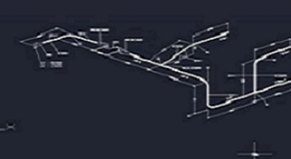

ISOmetrics
Used for component storage, Weld maps, Piping&instrumentation diagrams, Air flow diagrams, storage for larger data collections.
C/C STARTED IN LATE 2000
We work with a wide range of applications and do customer adoptations where it's needed to achieve desired results. Contact us for futhermore information regarding a specific subject. Today we work within Revit, Autocad, Plant 3D/Schematics, Magicad and Navisworks, Bently, Solibri, Adobe Photoshop&Illustrator, Autodesk Inventor, Unreal Engine, Rhino, Grasshopper, MS365-applications
We do anything related to BIM-Modelling, 2D&3D drawings and layouts, ISOmetrics, Weld maps, P&IDs, AFDs, Calculations etc...
Used for component storage, Weld maps, Piping&instrumentation diagrams, Air flow diagrams, storage for larger data collections.

Used for 3D modelling and BIM data collections. Data exported to Navisworks for 3D reviewing and x-interference checking aginst other disciplines